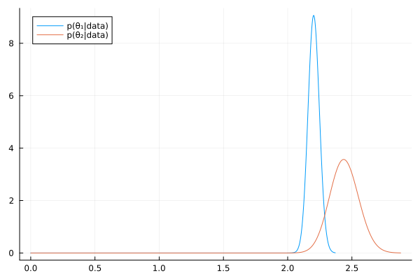
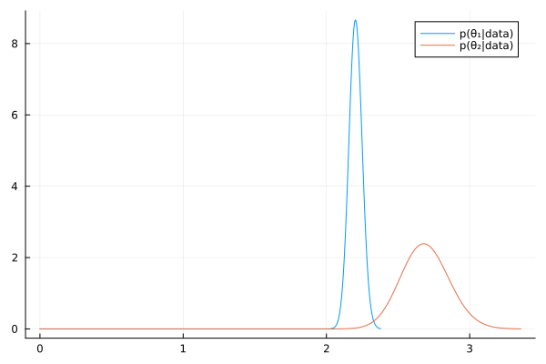

Exercise 4.5 Solution Example - Hoff, A First Course in Bayesian Statistical Methods
標準ベイズ統計学 演習問題 4.5 解答例
Table of Contents
a)
answer
From \(Y_i \sim \text{Poisson}(\theta X_i)\), the likelihood is
\begin{align*} p((Y_1, X_1), \dots, (Y_n, X_n) \mid \theta ) &= \prod_{i=1}^n p(Y_i, X_i \mid \theta ) \quad (\because \text{ i.i.d. })\\ &= \prod_{i=1}^n p(Y_i \mid X_i, \theta ) p(X_i \mid \theta ) \\ &\propto \prod_{i=1}^n p(Y_i \mid X_i, \theta ) \quad (\because X_i \text{ is independent from } \theta) \\ &= \prod_{i=1}^n \frac{(\theta X_i)^{Y_i} e^{-\theta X_i}}{Y_i!} \\ &\propto \theta^{ \sum_{i=1}^n Y_i } e^{-\theta \sum_{i=1}^n X_i} \end{align*}From \(\theta \sim \text{gamma}(a, b)\), the prior distribution is
\begin{align*} p(\theta) &= \frac{b^a}{\Gamma(a)} \theta^{a-1} e^{-b \theta} \\ &\propto \theta^{a-1} e^{-b \theta} \end{align*}ベイズの定理より、事後分布は、 Using Bayes’ rule, the posterior distribution is given by
\begin{align*} p(\theta \mid (Y_1, X_1), \dots, (Y_n, X_n)) &\propto \theta^{ \sum_{i=1}^n Y_i } e^{-\theta \sum_{i=1}^n X_i} \times \theta^{a-1} e^{-b \theta} \\ &\propto \theta^{ a-1 + \sum_{i=1}^n Y_i } e^{ - \theta (b + \sum_{i=1}^n X_i) } \end{align*}Therefore, the posterior distribution of \(\theta\) follows Gamma(\(a + \sum_{i=1}^n Y_i, b + \sum_{i=1}^n X_i\))
b)
answer
cancer_noreact=DataFrame(readdlm("./Exercises/cancer_noreact.dat", skipstart=1), :auto); sx₁, sy₁ = sum.(eachcol(cancer_noreact))
cancer_react=DataFrame(readdlm("./Exercises/cancer_react.dat", skipstart=1), :auto); sx₂, sy₂ = sum.(eachcol(cancer_react))
Counties having nearby reactors:
\begin{align*} \sum_{i=1}^n X_i &= 95 \\ \sum_{i=1}^n Y_i &= 256 \end{align*}Counties having no nearby reactors:
\begin{align*} \sum_{i=1}^n X_i &= 1037 \\ \sum_{i=1}^n Y_i &= 2285 \end{align*}From the above, the posterior distributions of \(\theta_1, \theta_2\) are as follows:
\begin{align*} \theta_1 &\sim \text{Gamma}(a_1 + 2285, b_1 + 1037) \\ \theta_2 &\sim \text{Gamma}(a_2 + 256, b_2 + 95) \end{align*}c)
i
answer
a₁, b₁ = 2.2 * 100, 100 a₂, b₂ = 2.2 * 100, 100 # Posterior distributions dist_1 = Gamma(a₁ + sy₁, 1/(b₁ + sx₁)) dist_2 = Gamma(a₂ + sy₂, 1/(b₂ + sx₂)) mean_1 = round((a₁ + sy₁) /(b₁ + sx₁), digits=2) mean_2 = round((a₂ + sy₂) /(b₂ + sx₂), digits=2) ["Posterior mean of Group 1: $mean_1" , "Posterior mean of Group 2: $mean_2"]
| Posterior mean of Group 1: 2.2 |
| Posterior mean of Group 2: 2.44 |
# 95% quantile-based confidence intervals ci_1 = round.(quantile.(dist_1, [0.025, 0.975]), digits=2) ci_2 = round.(quantile.(dist_2, [0.025, 0.975]), digits=2) ["95% CI of Group 1: $ci_1" , "95% CI of Group 2: $ci_2"]
| 95% CI of Group 1: [2.12, 2.29] |
| 95% CI of Group 2: [2.23, 2.67] |
θ₁_mc = rand(dist_1, 10000); θ₂_mc = rand(dist_2, 10000); "Pr(θ₂>θ₁|data) = $(mean(θ₁_mc .< θ₂_mc))"
"Pr(θ₂>θ₁|data) = 0.9788"

ii.
answer
a₁, b₁ = 2.2 * 100, 100 a₂, b₂ = 2.2 , 1 # Posterior distributions dist_1 = Gamma(a₁ + sy₁, 1/(b₁ + sx₁)) dist_2 = Gamma(a₂ + sy₂, 1/(b₂ + sx₂)) mean_1 = round((a₁ + sy₁) /(b₁ + sx₁), digits=2) mean_2 = round((a₂ + sy₂) /(b₂ + sx₂), digits=2) ["Posterior mean of Group 1: $mean_1" , "Posterior mean of Group 2: $mean_2"]
| Posterior mean of Group 1: 2.2 |
| Posterior mean of Group 2: 2.69 |
# 95% quantile-based confidence intervals ci_1 = round.(quantile.(dist_1, [0.025, 0.975]), digits=2) ci_2 = round.(quantile.(dist_2, [0.025, 0.975]), digits=2) ["95% CI of Group 1: $ci_1" , "95% CI of Group 2: $ci_2"]
| 95% CI of Group 1: [2.12, 2.29] |
| 95% CI of Group 2: [2.37, 3.03] |
θ₁_mc = rand(dist_1, 10000); θ₂_mc = rand(dist_2, 10000); "Pr(θ₂>θ₁|data) = $(mean(θ₁_mc .< θ₂_mc))"
"Pr(θ₂>θ₁|data) = 0.9992"
iii.
answer
a₁, b₁ = 2.2 , 1 a₂, b₂ = 2.2 , 1 # Posterior distributions dist_1 = Gamma(a₁ + sy₁, 1/(b₁ + sx₁)) dist_2 = Gamma(a₂ + sy₂, 1/(b₂ + sx₂)) mean_1 = round((a₁ + sy₁) /(b₁ + sx₁), digits=2) mean_2 = round((a₂ + sy₂) /(b₂ + sx₂), digits=2) ["Posterior mean of Group 1: $mean_1" , "Posterior mean of Group 2: $mean_2"]
| Posterior mean of Group 1: 2.2 |
| Posterior mean of Group 2: 2.69 |
# 95% quantile-based confidence intervals ci_1 = round.(quantile.(dist_1, [0.025, 0.975]), digits=2) ci_2 = round.(quantile.(dist_2, [0.025, 0.975]), digits=2) ["95% CI of Group 1: $ci_1" , "95% CI of Group 2: $ci_2"]
| 95% CI of Group 1: [2.11, 2.29] |
| 95% CI of Group 2: [2.37, 3.03] |
θ₁_mc = rand(dist_1, 10000); θ₂_mc = rand(dist_2, 10000); "Pr(θ₂>θ₁|data) = $(mean(θ₁_mc .< θ₂_mc))"
"Pr(θ₂>θ₁|data) = 0.9984"

d)
answer
日本語
「人口が多い地域は、人口が少ない地域よりも医療が充実しており、がんになった場合の生存率が高い可能性がある」など考えることもできるので、人口規模と致死率が独立していると考えるのは必ずしも合理的であると言えない。
そこで、 \( \theta_i \sim \exp(\beta_0 + \beta_1 X_i) \) などとして、階層モデルを考えるなどする。
English
It is also conceivable that “regions with larger populations may have better healthcare compared to regions with smaller populations, potentially leading to higher survival rates in cancer cases.” Therefore, assuming that population size and mortality rate are independent may not necessarily be reasonable.
Consequently, one might consider a hierarchical model, for example, by modeling the parameter \( \theta_i \) (or a related parameter like a rate \(\lambda_i\)) as a function of covariates \(X_i\), such as \( \lambda_i = \exp(\beta_0 + \beta_1 X_i) \).
e)
Answer
上のような形で、それぞれの事前分布を重み付きの混合分布にすることで、事前従属にできる。
(In this way, by using weighted mixture distributions for the respective priors, prior dependence can be established.)